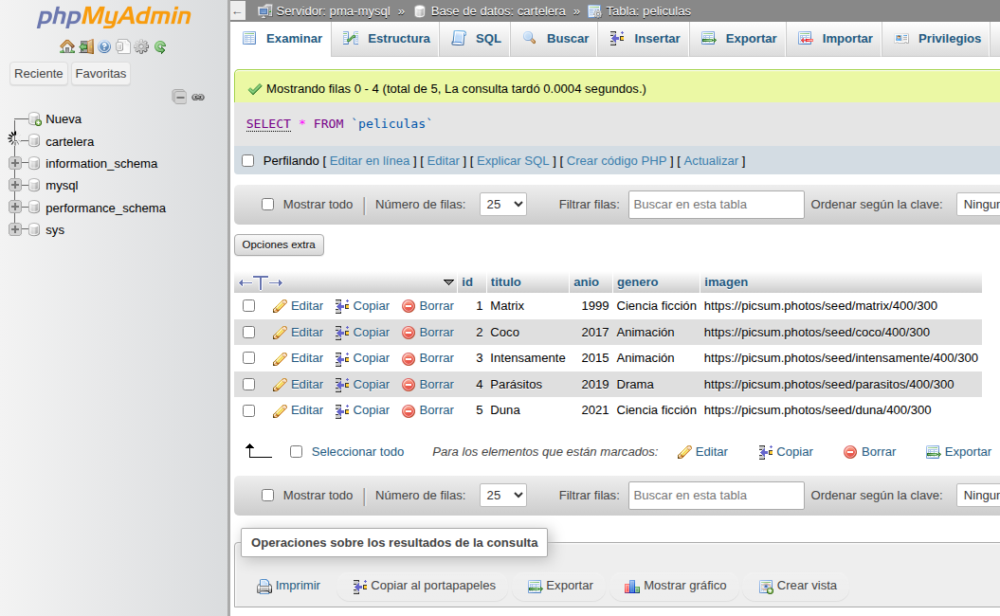

datos.php a una tabla realEn la Clase 4 la cartelera vivía en datos.php (un array de arrays). Hoy la pasamos a una base de datos de verdad: creamos la tabla con CREATE TABLE, cargamos las películas con INSERT y las consultamos con SELECT. Cada película deja de ser un array para ser una fila de una tabla.
Venimos construyendo un mini-sistema web, sumando una pieza por clase. Antes de arrancar con lo nuevo, ubiquémonos:
.php corriendo en localhost.session_start()) y páginas que reutilizan cabecera.php / pie.php con include.switch (?seccion=) y CSS distinto por sección.datos.php, y la cartelera que se arma sola con foreach.Hoy damos el paso que venimos anticipando desde la Clase 4: esos datos dejan de estar en un archivo .php y pasan a una base de datos de verdad.
datos.php ya era casi una tablaCerramos la Clase 4 con esta idea: si un array asociativo es una fila y sus claves son las columnas, entonces datos.php (todas las películas juntas) es casi una tabla. Hoy la hacemos tabla de verdad.
// datos.php (Clase 4): un array de arrays
$peliculas = [
'matrix' => ['titulo' => 'Matrix', 'anio' => 1999, 'genero' => 'Ciencia ficción', ...],
'coco' => ['titulo' => 'Coco', 'anio' => 2017, 'genero' => 'Animación', ...],
];.php y pasan a un servidor de base de datos, pensado para guardar, buscar y ordenar montones de datos sin tocar código.
El mapeo, de un vistazo (guardá esta imagen mental, es la idea de toda la clase):
datos.php (Clase 4) tabla peliculas (Clase 5)
─────────────────────────── ─────────────────────────────────────────
'matrix' => [ id │ titulo │ anio │ genero
'titulo' => 'Matrix', ───┼────────┼──────┼─────────────────
'anio' => 1999, ═══► 1 │ Matrix │ 1999 │ Ciencia ficción
'genero' => 'Ciencia f.', 2 │ Coco │ 2017 │ Animación
], 3 │ Duna │ 2021 │ Ciencia ficción
▲ ▲
un array asociativo = una FILA │ └─ cada CLAVE del array = una COLUMNA
las claves = las COLUMNAS └─ un id que la base pone sola (clave primaria)Una base de datos es un lugar organizado para guardar datos en tablas (filas y columnas). Un gestor de base de datos es el programa que las administra: crea tablas, guarda filas, responde consultas. Nosotros usamos MySQL (el que trae XAMPP; su variante se llama MariaDB, es lo mismo para lo nuestro).
CREATE, INSERT, SELECT…Esquema — dónde vive cada cosa:
Servidor MySQL (el motor; viene con XAMPP)
│
└── Base de datos: cartelera (el "cajón" de datos de este sistema)
│
└── Tabla: peliculas (una grilla: filas y columnas)
│
├── fila 1 → 1 | Matrix | 1999 | Ciencia ficción
├── fila 2 → 2 | Coco | 2017 | Animación
└── ...cartelera) con una tabla (peliculas).
Los que saben lo hacen así: primero se diseña la tabla en papel y recién después se abre la computadora. Con el diseño resuelto, escribir el CREATE TABLE es casi copiar.
Cómo se diseña, paso a paso:
peliculas.INT o VARCHAR.id que identifique cada fila sin repetirse.Los pasos 3 y 4 necesitan dos ideas: los tipos de dato y la clave primaria.
En la tabla, cada columna tiene un tipo de dato fijo. Los que usamos hoy:
| Tipo | Para qué | Ejemplo (película) |
|---|---|---|
INT | Números enteros | anio = 1999 |
VARCHAR(n) | Texto de hasta n caracteres | titulo = 'Matrix' |
Además, toda tabla necesita una clave primaria (primary key): una columna que identifica a cada fila sin repetirse. En la Clase 4 ese rol lo hacía la clave de afuera ('matrix'). En la tabla usamos una columna id que la base autonumera sola (AUTO_INCREMENT): 1, 2, 3…
id automático y no el título?id es un número único y estable que no cambia nunca, ideal para identificar la fila.
La ficha de diseño. Antes de escribir una línea de SQL, armá esta tablita en tu carpeta. Es el diseño de tu tabla; después el CREATE TABLE sale casi solo:
Tabla: peliculas
┌──────────┬──────────────┬──────────────────┬───────┐
│ columna │ tipo │ ejemplo │ ¿PK? │
├──────────┼──────────────┼──────────────────┼───────┤
│ id │ INT │ 1, 2, 3 │ SÍ │
│ titulo │ VARCHAR(100) │ Matrix │ │
│ anio │ INT │ 1999 │ │
│ genero │ VARCHAR(50) │ Ciencia ficción │ │
│ imagen │ VARCHAR(255) │ https://... │ │
└──────────┴──────────────┴──────────────────┴───────┘
cada fila de la ficha → una columna de la tablaUbicá cada columna de la tabla peliculas según el tipo de dato que le corresponde. Arrastrá (o tocá la tarjeta y después la zona) y al final tocá Verificar.
enteros, sin comillas
palabras, entre comillas
Con el diseño en la mano, recién ahora abrimos la herramienta. phpMyAdmin viene con XAMPP: con Apache + MySQL encendidos, entrá en el navegador a:
http://localhost/phpmyadminCrear la base (el "cajón" donde va a vivir la tabla):
cartelera. Cotejamiento: utf8mb4_unicode_ci (soporta tildes y ñ).Adentro de la base, phpMyAdmin te deja hacer todo de dos maneras. Conviene conocer las dos:
| Operación | Con botones (GUI) | Con SQL (pestaña SQL) |
|---|---|---|
| Crear una tabla | Formulario "Crear tabla": nombre + columnas + tipos | CREATE TABLE ... |
| Cargar una fila | Pestaña Insertar: un campo por columna | INSERT INTO ... |
| Ver los datos | Pestaña Examinar | SELECT * FROM ... |
| Buscar / filtrar | Pestaña Buscar | SELECT ... WHERE ... |

cartelera y la tabla peliculas ya cargada. La pestaña Examinar muestra las filas: es, en la práctica, el resultado de SELECT * FROM peliculas (lo vemos en la sección 6).;; de PHP al final de cada línea. Es el punto final de la instrucción.
CREATE TABLE arma la estructura: dice qué columnas tiene la tabla y de qué tipo es cada una. Comparalo con el array: las mismas claves, ahora con su tipo.
USE cartelera; -- trabajar dentro de la base 'cartelera'
CREATE TABLE peliculas (
id INT AUTO_INCREMENT PRIMARY KEY, -- clave primaria autonumerada
titulo VARCHAR(100) NOT NULL, -- texto obligatorio (NOT NULL)
anio INT,
genero VARCHAR(50),
imagen VARCHAR(255)
);nombre TIPO.PRIMARY KEY marca la columna identificadora; AUTO_INCREMENT hace que la base ponga el número sola.NOT NULL = esa columna no puede quedar vacía (una película sin título no tiene sentido).Anatomía de una columna (leé el CREATE TABLE despacio):
titulo VARCHAR(100) NOT NULL
│ │ │
│ │ └── restricción: no puede quedar vacía
│ └── tipo de dato: texto de hasta 100 caracteres
└── nombre de la columna
id INT AUTO_INCREMENT PRIMARY KEY
│ │ │ │
│ │ │ └── es la que identifica cada fila
│ │ └── la base la numera sola: 1, 2, 3...
│ └── tipo: número entero
└── nombre de la columna'titulo' => 'Matrix' (clave => valor, en PHP) se vuelve la columna titulo VARCHAR(100) (nombre + tipo, en SQL). La estructura es la misma; la tabla, además, le pone tipo a cada campo.
La tabla ya existe pero está vacía. INSERT agrega filas: cada película que era un array pasa a ser una fila.
INSERT INTO peliculas (titulo, anio, genero, imagen) VALUES
('Matrix', 1999, 'Ciencia ficción', 'https://picsum.photos/seed/matrix/400/300'),
('Coco', 2017, 'Animación', 'https://picsum.photos/seed/coco/400/300'),
('Duna', 2021, 'Ciencia ficción', 'https://picsum.photos/seed/duna/400/300');'Matrix'); los números, sin comillas (1999). Igual que en PHP.id: lo pone la base sola (1, 2, 3…) gracias a AUTO_INCREMENT.Así queda la tabla después de esos INSERT (fijate cómo la columna id se llenó sola):
| id | titulo | anio | genero |
|---|---|---|---|
| 1 | Matrix | 1999 | Ciencia ficción |
| 2 | Coco | 2017 | Animación |
| 3 | Duna | 2021 | Ciencia ficción |
Cada fila es lo que antes era un array. La columna id apareció sola: vos cargaste solo titulo, anio, genero e imagen.
verdadero o falso
En cada INSERT hay que escribir a mano el id de la película (1, 2, 3…), si no la fila no se guarda.
foreach)
SELECT consulta la tabla: le pide filas. Es lo que en la Clase 4 hacía el foreach (recorrer todo) y el lookup (buscar una).
SELECT * FROM peliculas; -- TODAS las filas y columnas (= el foreach)
SELECT titulo, anio FROM peliculas; -- solo esas dos columnas
SELECT * FROM peliculas WHERE genero = 'Animación'; -- solo las de ese género
SELECT * FROM peliculas WHERE anio >= 2015; -- solo las de 2015 en adelanteSELECT * = todas las columnas; SELECT titulo, anio = solo esas.FROM peliculas = de qué tabla.WHERE = la condición para filtrar (como el if): trae solo las filas que la cumplen.Anatomía de un SELECT (las cuatro partes, siempre en este orden):
SELECT titulo, anio FROM peliculas WHERE anio >= 2015 ;
│ │ │ │ │ │
│ │ │ │ │ └── la condición
│ │ │ │ └── "solo las filas que la cumplan"
│ │ │ └── nombre de la tabla
│ │ └── "de esta tabla…"
│ └── qué columnas quiero ( * = todas )
└── "traeme / mostrame"SELECT * FROM peliculas es "dame todas las películas" = el foreach ($peliculas as ...). Y WHERE es "dame solo esta" = el lookup $peliculas[$id]. El mismo objetivo, ahora en la base.
Probá vos: querés traer TODA la cartelera. ¿Qué va en el hueco?
SELECT * FROM ______ ;¿qué trae esta consulta?
SELECT titulo FROM peliculas WHERE anio >= 2019;Sobre la cartelera de ejemplo (Matrix 1999, Coco 2017, Intensamente 2015, Parásitos 2019, Duna 2021):
| Síntoma | Causa y solución |
|---|---|
| "You have an error in your SQL syntax" | Casi siempre falta el ; al final, una coma entre columnas, o un paréntesis sin cerrar. Leé la línea que marca el error. |
| El texto no se guarda / da error | El texto va entre comillas simples ('Matrix'). Sin comillas, MySQL lo toma como un nombre de columna. |
Unknown database 'cartelera' | No creaste la base todavía, o te olvidaste el USE cartelera; antes de las consultas. |
Table 'peliculas' already exists | Ya la habías creado. Usá DROP TABLE IF EXISTS peliculas; antes del CREATE para rehacerla. |
| Las tildes/ñ salen raras | La base no está en utf8mb4. Recreala con ese cotejamiento. |
| Término | Qué es |
|---|---|
| Base de datos | Lugar organizado donde viven las tablas de un sistema. |
| MySQL / MariaDB | El gestor: el programa que guarda los datos y responde consultas. |
| SQL | El idioma para hablarle a la base (CREATE, INSERT, SELECT…). |
| phpMyAdmin | Panel web (viene con XAMPP) para usar MySQL con el mouse. |
| Tabla | Conjunto de filas y columnas. Es la versión "de verdad" del array de arrays. |
| Fila (registro) | Una entrada de la tabla. Antes era un array asociativo. |
| Columna (campo) | Un dato con nombre y tipo (titulo VARCHAR(100)). |
| Tipo de dato | INT (número entero), VARCHAR(n) (texto), etc. |
| Clave primaria (PK) | Columna que identifica cada fila sin repetirse (el id). |
AUTO_INCREMENT | La base numera esa columna sola (1, 2, 3…). |
WHERE | Condición para filtrar filas en un SELECT (como un if). |
Ejercicios para repasar los conceptos de la clase y analizar SQL. Leé con atención y resolvé en base a lo abordado.
leé el CREATE
CREATE TABLE alumnos (
id INT AUTO_INCREMENT PRIMARY KEY,
nombre VARCHAR(80) NOT NULL,
edad INT
);1. ¿Cuál es la clave primaria de esta tabla?
2. ¿Cuál INSERT está bien escrito?
3. ¿Qué consulta trae toda la cartelera?
4. ¿Para qué sirve WHERE en un SELECT?
5. En el puente Clase 4 → Clase 5, ¿a qué corresponde una película (un array asociativo)?
Ya tenés tu primera tabla con datos reales y sabés consultarla. Lo que viene:
UPDATE), borrarlas (DELETE) y ordenar resultados (ORDER BY).Documentación y práctica para tener a mano:
SELECT, INSERT, CREATE TABLE — W3Schools SQLMaterial de esta clase y las anteriores: